阅读词表
| 词条 | 拼音 | 类型 | 说明 |
|---|---|---|---|
| 肥西 | féi xī | place | 安徽地名，出土过二里头风格青铜器。 |
| 灰坑 | huī kēng | concept | 考古遗迹中常见的垃圾坑或废弃坑。 |
| 夏桀 | xià jié | person | 传说中的夏朝末代君主。 |
| 商颂 | shāng sòng | text | 《诗经》中保存商族祭祀与祖先记忆的一组诗。 |
| 陶礼器 | táo lǐ qì | artifact | 陶制礼仪器物，多与酒礼和身份等级有关。 |
| 西吴壁 | xī wú bì | site_or_culture | 山西绛县遗址，文中讨论为冶铜地点。 |
| 商汤 | shāng tāng | person | 商朝开国君主，传统记载中灭夏。 |
| 巢湖 | cháo hú | place | 安徽湖泊，文中与“南巢”传说相关。 |
| 三官庙 | sān guān miào | site_or_culture | 安徽肥西遗址，出土二里头时期遗存。 |
| 南巢 | nán cháo | place | 古书中夏桀被放逐之地，文中联系到巢湖地区。 |
| 疆域 | jiāng yù | concept | 国家或政权控制、影响的地域范围。 |
| 偃师商城 | yǎn shī shāng chéng | site_or_culture | 商代早期城址，位于二里头以东。 |
| 朱砂 | zhū shā | rare_word | 红色矿物，古代葬俗中常用于铺垫或涂抹。 |
| 东下冯 | dōng xià féng | site_or_culture | 晋南地区与二里头时期相关的考古文化类型。 |
| 岳石文化 | yuè shí wén huà | site_or_culture | 山东地区龙山以后、商代以前的考古文化。 |
| 郑州商城 | zhèng zhōu shāng chéng | site_or_culture | 商代早期大型城址。 |
| 正考父 | zhèng kǎo fǔ | person | 春秋时期宋国贵族，传统记载中得到商颂。 |
| 大师姑 | dà shī gū | site_or_culture | 郑州附近夏商时期古城遗址。 |
| 望京楼 | wàng jīng lóu | site_or_culture | 新郑附近夏商时期古城遗址。 |
| 下七垣文化 | xià qī yuán wén huà | site_or_culture | 豫北冀南一带商代早期前后的考古文化。 |
| 逸周书 | yì zhōu shū | text | 传世古书，保存若干周代相关材料。 |
| 扑朔迷离 | pū shuò mí lí | idiom | 形容事情错综复杂，难以辨清。 |
| 冶炼 | yě liàn | rare_word | 用高温从矿石中提炼金属。 |
| 都邑 | dū yì | concept | 作为政治中心的大型聚落或城市。 |
| 碳十四 | tàn shí sì | concept | 利用放射性碳测定年代的方法。 |
| 仲虺之诰 | zhòng huǐ zhī gào | text | 《尚书》篇名，传统上与商汤灭夏有关。 |
| 括地志 | kuò dì zhì | text | 唐代地理著作，常被古书注释引用。 |
| 殷商甲骨卜辞 | yīn shāng jiǎ gǔ bǔ cí | text | 商代刻写在甲骨上的占卜文字材料。 |
| 汤誓 | tāng shì | text | 《尚书》篇名，传统上为商汤灭夏誓词。 |
| 长发 | cháng fā | text | 《诗经・商颂》篇名，歌颂商族祖先和商汤功业。 |
| 沦丧 | lún sàng | rare_word | 丧失、沦陷。 |
| 鹊巢鸠占 | què cháo jiū zhàn | idiom | 比喻强占别人的居处或位置。 |
| 夷为平地 | yí wéi píng dì | idiom | 被彻底毁坏并铲平。 |
| 麋鹿 | mí lù | rare_word | 大型鹿科动物，古代遗址中常见动物遗存。 |
| 蜷曲 | quán qū | rare_word | 弯曲、卷曲。 |
| 苟延残喘 | gǒu yán cán chuǎn | idiom | 勉强维持生存。 |
| 舟筏 | zhōu fá | rare_word | 船和筏一类水上交通工具。 |
| 陶窑 | táo yáo | artifact | 烧制陶器的窑炉。 |
| 政体 | zhèng tǐ | concept | 政权组织和统治形态。 |
| 酋长 | qiú zhǎng | concept | 部落或地方共同体的首领。 |
| 朝贡 | cháo gòng | concept | 向中心政权进献贡物并承认关系的制度。 |
| 葬俗 | zàng sú | concept | 丧葬习惯和仪式传统。 |
| 第五纵队 | dì wǔ zòng duì | concept | 内部配合外来敌对势力的人群。 |
| 夏墟 | xià xū | concept | 周人称夏朝故地的说法。 |
| 甲骨卜辞 | jiǎ gǔ bǔ cí | 项目词典 | 商代刻写在甲骨上的占卜文字。 | 刻写在龟甲兽骨上的占卜文字。 | 刻写在甲骨上的占卜记录。 | 刻写在龟甲兽骨上的占卜辞句。 |
| 辉卫文化 | huī wèi wén huà | 项目词典 | 豫北地区与早商前后相关的考古文化。 |
| 周武王 | zhōu wǔ wáng | 项目词典 | 周发，灭商之君。 |
| 宫殿区 | gōng diàn qū | 项目词典 | 都邑中宫殿和王室活动集中的区域。 |
| 祭祀坑 | jì sì kēng | 项目词典 | 用于举行祭祀或埋入祭品的坑穴。 | 考古遗址中用于掩埋祭品或举行祭祀的坑穴。 | 用于祭祀或埋藏祭品的坑穴。 | 用于祭祀埋牲或埋人的坑穴。 | 考古遗址中用于祭祀、掩埋祭品或尸骨的坑穴。 |
| 红烧土 | hóng shāo tǔ | 项目词典 | 经火烧后变红变硬的土，常见于考古遗迹。 |
| 人祭 | rén jì | 项目词典 | 杀人用于祭祀的宗教行为。 | 以人作为祭品的祭祀行为。 | 杀人用于祭祀。 |
| 偃师 | yǎn shī | 项目词典 | 今河南洛阳附近地名，二里头遗址所在地。 |
| 儒家 | rú jiā | 项目词典 | 以孔子思想及相关经典传统为核心的学派。 |
| 先后 | xiān hòu | 项目词典 | 《盘庚》引文中指已故先王。 |
| 六经 | liù jīng | 项目词典 | 传统所称《诗》《书》《礼》《乐》《易》《春秋》。 |
| 冶铜 | yě tóng | 项目词典 | 从铜矿石中冶炼铜料的技术。 |
| 冶铸 | yě zhù | 项目词典 | 冶炼并铸造金属器物。 | 冶炼和铸造金属器物的工艺。 |
| 分封 | fēn fēng | 项目词典 | 周初封邦建国制度。 |
| 卜辞 | bǔ cí | 项目词典 | 甲骨占卜后刻写或记录的辞句。 | 甲骨上记录占卜的文字。 | 占卜时刻写或记录的辞句。 |
| 周公 | zhōu gōng | 项目词典 | 周公旦，武王之弟。 | 周公旦，周初政治家。 |
| 商族 | shāng zú | 项目词典 | 商王朝建立前后的族群共同体。 |
| 商王 | shāng wáng | 项目词典 | 商朝王。 |
| 土著 | tǔ zhù | 项目词典 | 本地原有居民或族群。 |
| 城邑 | chéng yì | 项目词典 | 古代有人群聚居、具有一定组织和防御功能的城镇聚落。 |
| 基址 | jī zhǐ | 项目词典 | 建筑物遗留下来的基础位置。 |
| 夯土 | hāng tǔ | 项目词典 | 把土层层夯实形成建筑基础或城墙的技术。 |
| 孔子 | kǒng zǐ | 项目词典 | 春秋时期思想家、教育家，儒家学派的重要奠基者。 |
| 宋国 | sòng guó | 项目词典 | 周初分封商王族后裔之国。 |
| 宫城 | gōng chéng | 项目词典 | 城邑内宫殿或王室建筑集中的城垣区域。 |
| 尚书 | shàng shū | 项目词典 | 儒家经典之一，文中引用《盘庚》篇。 | 保存上古政治文献和诰命的儒家经典。 |
| 左传 | zuǒ zhuàn | 项目词典 | 春秋史传文献。 |
| 廊檐 | láng yán | 项目词典 | 建筑外围的廊和屋檐结构。 |
| 成王 | chéng wáng | 项目词典 | 周成王，武王之子。 |
| 新砦 | xīn zhài | 项目词典 | 河南新密遗址；“砦”同“寨”，网页可能误作“新碧”。 |
| 春秋 | chūn qiū | 项目词典 | 孔子时代相关的编年史经典。 |
| 柱洞 | zhù dòng | 项目词典 | 考古遗迹中柱子留下的洞穴痕迹。 |
| 武王 | wǔ wáng | 项目词典 | 周武王。 |
| 殷商 | yīn shāng | 项目词典 | 商朝后期文化和政权。 | 商代后期以殷墟为中心的商王朝阶段。 |
| 江汉 | jiāng hàn | 项目词典 | 长江与汉水流域一带。 |
| 洛邑 | luò yì | 项目词典 | 周初在洛阳营建的新都。 |
| 淮河 | huái hé | 项目词典 | 中国东部重要河流。 |
| 肢解 | zhī jiě | 项目词典 | 将肢体切割分解。 |
| 许宏 | xǔ hóng | 项目词典 | 考古学者，长期主持或研究二里头考古。 |
| 诗经 | shī jīng | 项目词典 | 中国古代诗歌总集，儒家经典之一。 |
| 迁徙 | qiān xǐ | 项目词典 | 群体从一地迁移到另一地。 |
| 遗存 | yí cún | 项目词典 | 古代活动留下的遗物、遗迹或现象。 |
| 铜斝 | tóng jiǎ | 项目词典 | 青铜斝，古代三足酒器。 |
| 铜钺 | tóng yuè | 项目词典 | 青铜钺，常象征军事权力。 |
| 铜镞 | tóng zú | 项目词典 | 青铜箭头。 |
| 门楼 | mén lóu | 项目词典 | 门上或门前的楼式建筑结构。 |
青铜器词表
| 器名 | 拼音 | 类型 | 说明 |
|---|---|---|---|
| 斝 | jiǎ | bronze_item | 古代青铜酒器，圆口三足。 |
| 觚 | gū | bronze_item | 古代饮酒器。 |
| 钺 | yuè | bronze_item | 大型斧形兵器或礼器。 |
| 爵 | jué | bronze_item | 古代酒器，也引申为爵位。 |
| 盉 | hé | bronze_item | 盛酒或盛水器，也用于调和酒味浓淡。 |
| 鬶 | guī | bronze_item | 古代陶制或青铜礼器，形制特殊。 |
| 镞 | zú | bronze_item | 箭头。 |
| 甑 | zèng | bronze_item | 古代蒸食炊具。 |
| 鬲 | lì | bronze_item | 古代煮食炊器。 |
| 甗 | yǎn | bronze_item | 古代蒸食器，上甑下鬲。 |
| 戚 | qī | bronze_item | 古代斧形兵器或礼器。 |
| 戈 | gē | bronze_item | 古代横刃长柄兵器。 |
章节导读札记
| 主题 | 札记 | 操作 |
|---|---|---|
| 暂无章节导读札记 | ||
用户札记
| 类型 | 页 | 内容 |
|---|---|---|
| 暂无用户札记 | ||
原书阅读器页 089原书物理 PDF 页 087印刷页 75
第四章异族占领二里头
夏朝和商朝的更迭，在史书中有道德评判色彩很强的记载：末代帝王夏桀胡作非为引起天怒人怨，终于被新兴的有道之君商汤取代。
帝桀之时……桀不务德而武伤百姓，百姓弗堪……汤修德，诸侯皆归汤，汤遂率兵以伐夏桀。桀走鸣条，遂放而死……汤乃践天子位，代夏朝天下。[[fn:1]]
但考古呈现出来的过程更为复杂，一些来源各异的落后人群曾侵入二里头古城，统治时间长达半个世纪。中国历史上的第一次王朝更迭显得扑朔迷离。
夏朝的敌人来自哪里？这需要从二里头古国的疆域开始考察。
五百里王朝
在二里头二期，古城扩张到3平方公里后，已经达到一个早期国家的体量。这就带来一个问题：这个早期国家统治的范围有多大？
从最低标准看，洛阳盆地是二里头都邑能够控制的范围。盆地东西狭长，跨度约50公里。有研究者曾统计洛阳盆地内的聚落数量：在二里头一期，古城之外发现聚落19个，二期迅速增长到83个，到三、四期稳定保持在100个左右，其中，面积在0.5平方公里左右的“乡镇”级大聚落约20个，其余为0.1平方公里及以下的村落。从“王都”到乡镇、村落，等级格局非常明显，显然属于同一个王国政体。[[fn:2]]
至于二里头-夏王朝在洛阳盆地外能够控制的疆域，史书和考古都难以给出标准答案。其一，编写相关史书的主要是战国到西汉时人，他们还没有对早期国家的考古知识，只能按自己生活的世界想象三皇五帝和夏商时代，所以孟子会说，大禹治水的范围遍及江、河、淮、汉：“禹掘地而注之海，驱蛇龙而放之范，水由地中行，江、淮、河、汉是也。” （《孟子•滕文公章句下》）这是战国时代华夏人的认知世界，但上古的华夏范围还没这么大。
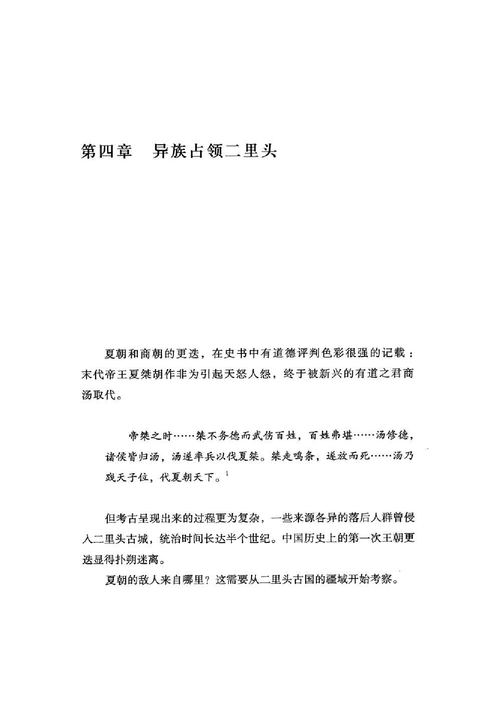
原书阅读器页 090原书物理 PDF 页 088印刷页 76
其二，考古学也很难解答政治史层面的问题。考古的主要对象是古人生产的器物，特别是数量最多的陶器，虽然从陶器风格可以划出“二里头文化”分布的范围，但陶器分布范围和古国政治体并不是一回事，不然，七八千年前的裴李岗文化和仰韶文化都会是地跨上千里的古国。
以陶器为基础的二里头文化分布范围比较广，从晋南到关中、河南省大部，甚至远及安徽省，但风格并不完全一致，还会按地域分成几个“类型”，所以陶器文化很难和古国的政治疆域等同。二里头人对铸铜技术严格保密，制作的铜器很少出现在外地，也难以作为指标。
二里头文化遗址的分布及出土陶礼器的遗址示意图：黑点是二里头文化遗址，编号的空心方框是出土二里头风格陶礼器的地点。
关于二里头-夏朝的疆域，日本学者西江清高和久慈大介曾提出一个方法：考察陶礼器的分布。[[fn:3]] 二里头文化拥有独特的陶礼器（酒器）群，觚、爵、盉、斝、鬶等，只有地位较高的人才能拥有成套的陶礼器。如果这些陶礼器群出现在二里头古城之外的地方，就可能是二里头-夏朝的控制范围，或者是夏王室给外地酋长的赏赐，我们由此可以窥探古国的政治影响力范围。
从西江清高制作的分布地图可见，陶礼器出现最集中的地方在黄河南岸以及嵩山东南麓，西起河南陕县，东到郑州，东西约200公里，南北约100公里。本书推测，这应当是二里头古国（夏朝）直接统治的区域，比二里头文化分布范围要小得多。
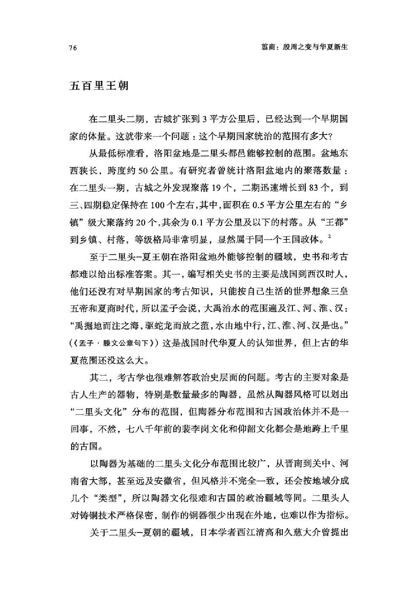
原书阅读器页 091原书物理 PDF 页 089印刷页 77
在较远的外围也有一些零星的二里头陶礼器出土，如河南省南部的方城八里桥和驻马店杨庄，陕西商州的东龙山。这些可能是和二里头古国（夏朝）存在朝贡关系的部落，反映了夏朝的影响力范围。
这个“王朝”疆域要低于战国时人的想象，但已经超过以往中国境内的任何古国。究其实质，二里头-夏朝属于古国和王朝之间的过渡状态，或者说在前文明与文明之间的门槛上。
古史有“启征西河”的记载，即禹的儿子启曾远征晋南地区：“（启）三十五年，征河西。”（《帝王世纪》）从地理环境推测，夏王朝应当和铜、盐矿产丰富的晋南有密切联系。山西省南部，特别是汾河下游地区，有比较密集的二里头文化聚落，属于晋南本地的东下冯类型。[[fn:4]]
在二里头一夏朝时期，晋南地区的绛县西吴壁出现了冶铜工场，主要是把铜矿石冶炼成红铜，但没有在当地发现青铜铸造技术。发掘者推测，西吴壁可能是二里头-夏朝控制的一处采矿和冶炼基地，生产的红铜供应二里头。但西吴壁尚未发现高规格的城邑、建筑和墓葬等，缺少夏朝统治的直接证据；也许，它是由本地部族掌控的，用铜料和二里头人贸易。
晋南没有发现二里头-夏朝建立的城池，直到商朝早期，商人才在晋南建立了两座夯土小城池，距离西吴壁数十公里，说明商人已经控制西吴壁铜矿。在早商，西吴壁的炼铜炉底部还有人祭遗存，[[fn:5]] 这似乎是当地族群接受商文化的表现。
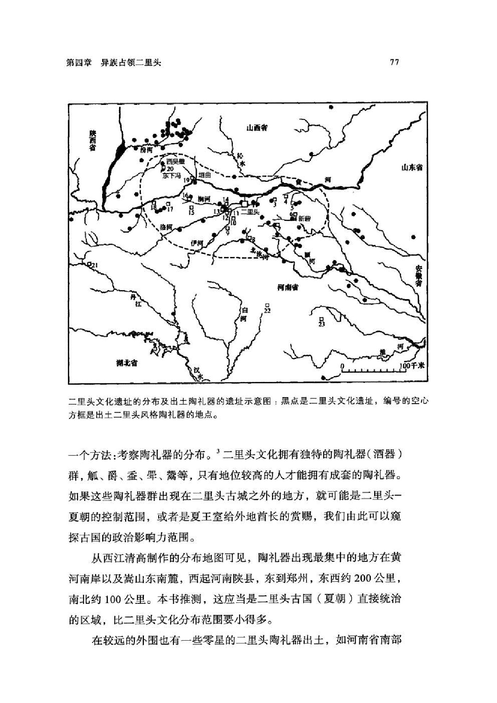
原书阅读器页 092原书物理 PDF 页 090印刷页 78
在东方，夏王朝有两个比较重要的据点——郑州大师姑古城和新郑望京楼古城，距离二里头100公里左右，城池规模不大，边长仅数百米，城内没有发现高等级建筑和墓葬，但抛掷在灰坑里的尸骨较多，显示有较强的权力因素和社会冲突，也可能是和异族之间的战争比较频繁。
这两座小城，意在守卫夏朝的“边疆”。从这两地再向东，是山东地区的岳石文化；向北，是辉卫文化和下七垣文化。当然，它们和夏都二里头的关系也难以确定，也许是二里头直接管辖的边疆据点，也许是接受二里头册封的地方自治“诸侯”。
夏末商初中原主要考古文化分布图6：郑州（大师姑）和新郑望京楼处在二里头文化的东部边疆，其中的二里岗（冈）文化兴起较晚，和二里头是前后承接关系。（图）
夏王都沦丧
距今3600—3500年间，是二里头文化的尾声——第四期。这一百年又分前后两段：前面半个世纪，二里头人仍旧按照原来的轨迹生活，沿用着三期建成的宫殿和宫城墙，各种手工作坊都在生产，铜器铸造技术稳步提高；后半个世纪则发生了剧烈变化，宫城墙开始塌毁，几座宫殿逐渐废弃，某些外来者侵入了二里头。
在后半阶段，D1宫殿仍在使用，但明显更换了主人：院落里挖掘了很多灰坑（垃圾坑），有些灰坑破坏了柱廊和宫殿台基；院落围墙下有很多低等级墓葬，有些死者居然被埋在柱廊下；西廊檐下甚至挖出了一座陶窑，说明曾有人在宫殿院里挖土制陶，生产下等人使用的陶器。
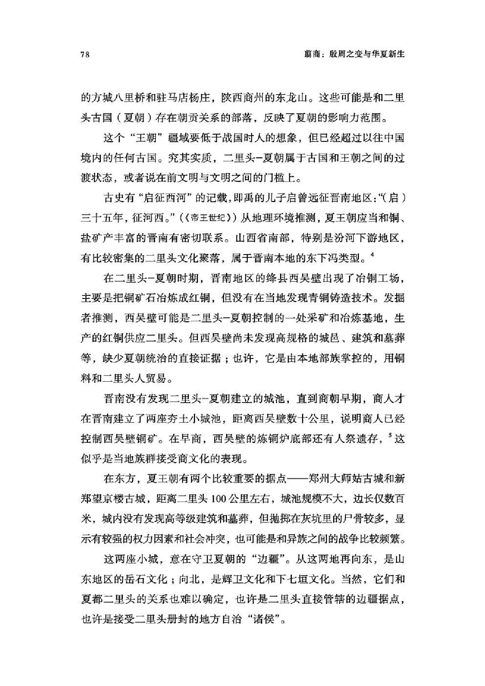
原书阅读器页 093原书物理 PDF 页 091印刷页 79
种种迹象显示，这座夏都最宏大的宫殿已经成了大杂院，主人不再是显贵豪门，而是一大批外来的乡土民众。此外，D2宫殿院落以及南邻的D4也在发生类似的变化，被外来者粗暴利用，很快就失去了往日的辉煌。
这些鹊巢鸠占，反客为主的外来者是谁？没有文字记录，考古学者只能从最擅长的陶片分析入手。
在夏朝最后的半个世纪，二里头突然出现了来自豫北下七垣文化和山东岳石文化的陶器，特别是D1、D2宫殿灰坑中的陶片，主要是外来风格。这说明，有大量来自东北方向的人群入主了二里头，他们很多虽只是普通民众，但作为征服者，入住了D1、D2这种高级宫殿。
宫城西南角的两座门楼（D7基址和D8基址）在四期晚段也被废弃，踩踏出的道路覆压在柱洞之上，说明门楼建筑已被夷为平地。宫城东墙也出现了坍塌迹象，有些小路穿过城墙，还有堆积的垃圾。
这一轮变化发生在距今约3550年前；对照史书，这正是东方商族崛起、夏商易代的时间，商汤（武王）带领商人攻灭了夏朝。[[fn:7]]
在半个世纪的“占领期”，商人征服者放任二里头的宏伟宫殿逐渐失修、损坏，而新建了两处较大型建筑。其中的一座，在宫城东墙下，D2院落北侧，借用了一段东城墙，同时封堵了东墙最北的一座城门，被编号为D6宫殿基址。
D6宫殿是分三次逐渐形成的，最早在西端建了一座接近方形的建筑，然后分两次向东扩建，最后和东宫墙连接。它没有之前二里头宫殿的宏大和规整，而是更加紧凑和实用。这是典型的商人早期风格：四合院结构，贴着围墙建房子，不在院落中央建造独立的主体殿堂。
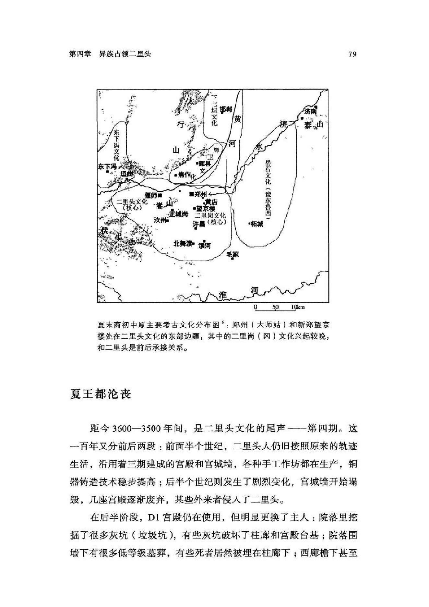
原书阅读器页 094原书物理 PDF 页 092印刷页 80
占领者新建的另一座建筑是D10，不太大，在宫城的外侧东南角，恰好占据了宫南路大道。可见，此时宫城南墙已经塌毁，可以随意通行。
商朝占领时期的二里头宫殿区平面图[[fn:8]] ：6号和10号基址就是在这一时期新建的，昔日的1号和2号基址则逐渐被废弃。
商人没有继续把二里头当作都城，而是在二里头以东8公里的偃师市（区）郊建造了一座新聚落，同时，在现今的郑州市区也建了一座。这两座聚落逐渐扩大，并修筑了城墙，被考古学者分别称为偃师商城和郑州商城。
这说明，商人对二里头的占领完全是实用和策略性的，新建筑也不太重视礼仪性。另一方面，第四期发现的被随意抛弃的尸骨数量大增，其中大部分应当来自商人入侵和统治二里头时的杀戮。比如，一座四期晚段的墓葬（1984VIM5），墓主的胸骨被一枚8厘米长的铜镞射入，埋在宫殿区以北的六（VI）区传统墓地。他很可能就是被商人占领军所杀的夏人，但家人还是尽量按正常标准埋葬了他。[[fn:9]]
商人占领二里头时期的杀戮还表现在灰坑中，不仅坑中的人骨明显增加，还有长期积累的零碎人骨。比如，有一个深达1.85米的灰坑，在其使用期间，一直有零星的人骨被扔进去，而且坑中其他垃圾主要是各种动物的骨骸以及陶制炊器残片。这很可能是食人者房屋旁边的垃圾坑：
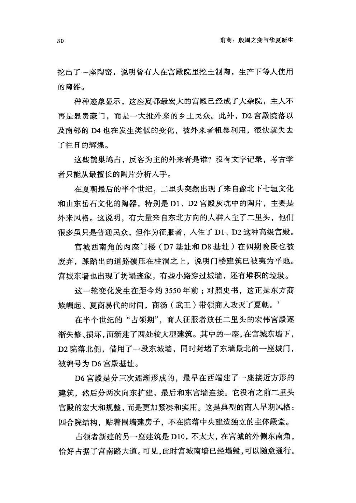
原书阅读器页 095原书物理 PDF 页 093印刷页 81
人骨在2000IIIH17的不同层次、不同部位都有出现，似肢解后弃于坑中。出土有包括深腹罐、圆腹罐、鼎、甑、鬲、甗、刻槽盆、大口尊、觚、器盖等在内的较多陶片，牛、羊、猪、麋鹿、鸟、蚌、丽蚌、圆顶珠蚌、圆田螺动物遗存。[[fn:10]]
再晚一些，作坊区东北侧的一座灰坑（2004VH305）有五具较完整的人骨。这座灰坑边长约2米，深约1.3米，最底部有一名十六七岁的男性，上面是四名女性，其中一名女性（2号）身下铺有约2毫米厚的朱砂。这五人的身体多蜷曲，很可能是死于他杀。
二里头较高级的墓葬中，常给墓主铺垫朱砂，这是自龙山时代已经出现的葬俗；但2号女性是和其他人一起被抛尸灰坑的，不是正常的死亡和丧葬，为何独独她获得了铺垫朱砂的待遇？可能她死前有一定地位，负责抛尸埋葬者对她有些同情且也有获得朱砂的能力，但仍不会（或者说不敢）给她挖一个单独的专用墓穴。这座坑不太像祭祀坑，因为坑中包含较多生活垃圾。[[fn:11]]
存在征服之后的暴力统治，但也维持着相对稳定的社会秩序，这是被占领下的二里头的基本状态。
在夏商易代之际，二里头人的青铜冶铸技术堪称独步中原甚至东亚，商族人自然会非常重视。商人从二里头铸铜区调拨了一些人，分配到偃师和郑州商城建立冶铸工场，但二里头铸铜场的主体仍在继续生产。
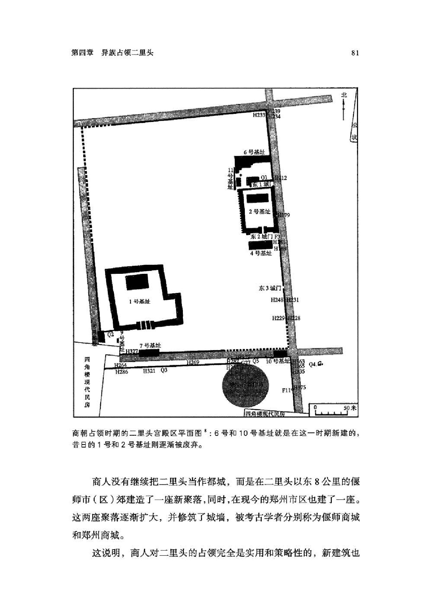
原书阅读器页 096原书物理 PDF 页 094印刷页 82
二里头的铸铜人群和商人的关系似乎不错。在商人占领期间，手工作坊区的北墙也有发生损坏，但立刻进行了重建。[[fn:12]] 铸铜场区并未发现太多外来陶片，看来商人占领者比较尊重冶铸场所，没有在这里建立营地。
这也使人产生了这样一个联想：也许，铸铜族群是灭亡夏朝一二里头的“第五纵队”，他们不甘心宫殿区族群垄断权力，坐享统治收益，便联合外来者商族，一起征服了宫殿区族群。铸铜族群和商人的协作，换来了二里头古城半个世纪的寿命。
但二里头的夏王族群并未被赶尽杀绝。新建的偃师商城发现了一些二里头风格的陶器，而且二里头宫殿区的某些规划特点又出现在了偃师商城的宫殿区。看来，商人征服者把二里头宫廷人群（或是其中的一部分）迁到了8公里外的偃师商城，让他们参与建设新城。
而在苟延残喘近半个世纪后，二里头的青铜作坊还是被彻底迁移到了郑州商城。从此，二里头古城消失，夏王朝最后的痕迹不复存在。
遥远的巢湖殖民地
《尚书・仲虺之诰》记载，商汤灭夏之后，把末代夏王桀驱赶到了“南巢”：“成汤放桀于南巢。”古代注家认为，“南巢”是安徽的巢湖之滨：“庐州巢县有巢湖，即《尚书》‘成汤伐桀，放于南巢’者也。"（《史记正义》引《括地志》）
巢湖，在二里头东南方500多公里外，不仅不是二里头文化区，甚至不属于二里头前身（新智人所属的煤山文化分布区）。夏桀的逃亡为何指向巢湖？从史书里再也找不到旁证。
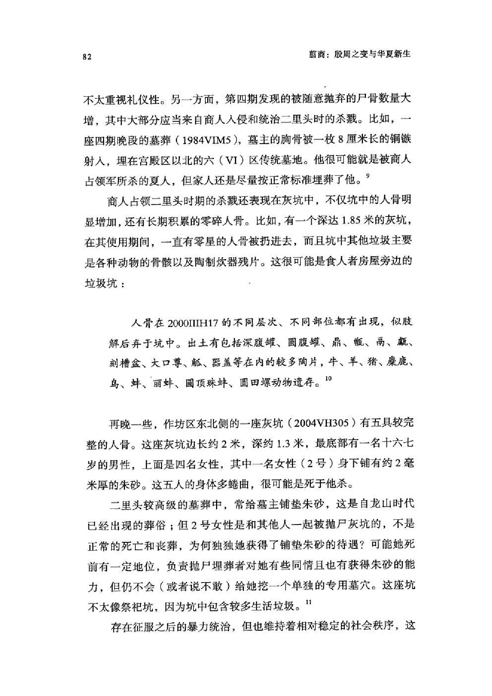
原书阅读器页 097原书物理 PDF 页 095印刷页 83
1972年，安徽肥西县的大墩孜村出土了两件青铜斝和一枚青铜铃，铜铃是二里头墓葬中常见的造型，两件青铜斝也属于二里头晚期特征。肥西县在巢湖西岸，似乎和夏桀逃亡“南巢”相呼应。
之后，肥西县多次出土二里头风格的青铜器和陶器。在二里头古城之外，肥西是当时出土青铜器最多的地区。较新的发现是三官庙聚落遗址，有房屋被烧毁后的红烧土堆积，里面有十多件青铜器，主要是钺、戚和戈等兵器。[[fn:14]]
碳十四测年显示，三官庙遗址距今约3700年，正当二里头古国最鼎盛的第三期，所以，可能是当时二里头铸铜人群曾发生内讧，一部分被排挤者被迫南下另谋生路，迁徙到了肥西三官庙定居。从那之后，他们和夏朝的联系似乎很弱，其中的一个表现是，他们制作的青铜器逐渐和二里头拉开了距离，甚至出现了二里头没有的造型，比如“半月形铜钺”。
不考虑沿途部落的敌意，从二里头到肥西的交通算不上太困难：
先步行到新砦一带，乘坐舟筏先后进入颍河和淮河，再溯泗水而上，便可抵达肥西附近。
目前尚未在肥西县发现冶铸铜的遗址，也没有发现高等级的宫殿和大型聚落，但零星发现的青铜器证明，确实有来自二里头的人长期定居于此。
当夏王朝被商人占领，也许末代王夏桀想起了遥远南方的那批二里头铸铜师，于是南逃寻求庇护，结果商人追踪而至，毁灭了夏人这个南方据点：房屋被焚毁，被杀者的尸骨和兵器被埋在了灰烬中。
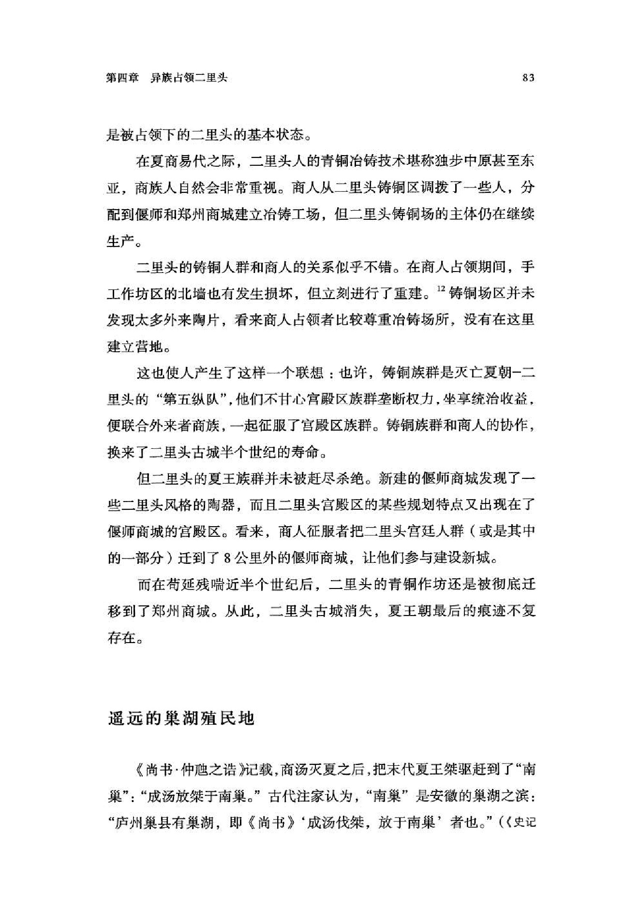
原书阅读器页 098原书物理 PDF 页 096印刷页 84
至于二里头的征服者，灭掉了夏王朝的商人，为什么他们的陶器分属下七垣和岳石文化，却没有自己的特色？
这群征服者的来历扑朔迷离。
附录：关于夏朝的记忆
目前已发现的殷商甲骨卜辞从来没有提到过夏朝，这有点不好解释。有学者认为，从来没有过夏朝，所以商人没有记载；也有学者认为，商人肯定知道夏朝，只是甲骨卜辞只专注祭祀神灵和现实问题，不涉及改朝换代的历史，所以不用提及。[[fn:17]]
《尚书•汤誓》是商汤灭夏时的讲话，不过考古学者认为，这篇内容并不可靠，很可能是西周以后的人创作的。
《诗经》里有一组商人的史诗“商颂”，在歌颂商汤功业的《长发》中，出现了一句“韦顾既伐，昆吾夏桀”，大意是，商汤先讨伐韦和顾，然后又进攻昆吾和夏桀。对于灭亡夏朝的丰功伟业，“商颂”只有这一处。
而且，《诗经》里的“商颂”未必是商朝原创的作品。灭商之后，周朝把一部分商王族分封到了宋国，以传承商朝的世系，但宋国人最
初并没有“商颂”，是春秋初期的宋国贵族正考父从周朝掌管音乐的“太师”那里得到了“商颂十二篇"。[[fn:18]]
这组“商颂”的最初作者已无从知晓，也许是商朝的史诗被周朝接收，又保存了三四百年才交给宋国人，这中间，周人很可能对它们进行过改编，原创性打了很多折扣。正考父是孔子的七世祖，编辑《诗经》时，孔子把“商颂”也编了进去，遂流传至今。
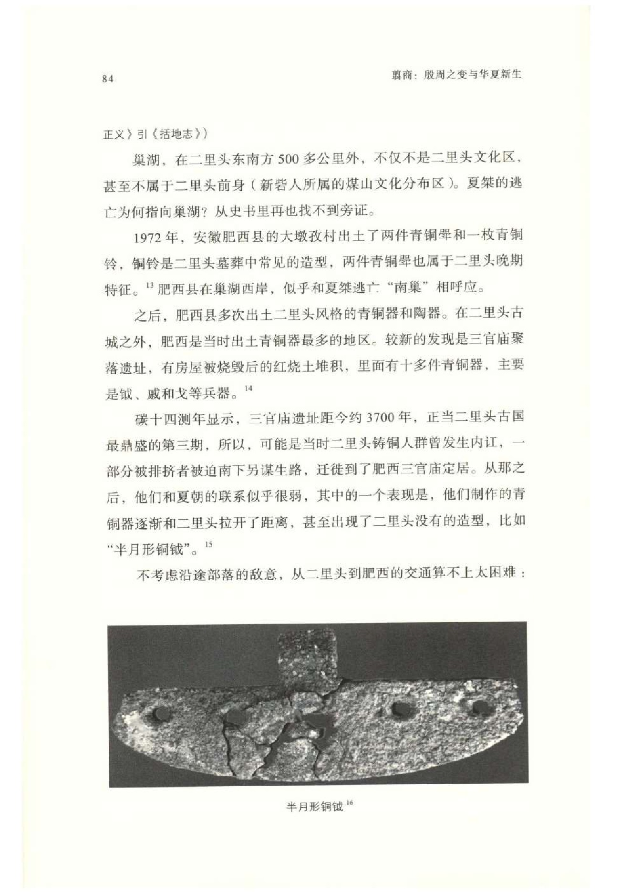
原书阅读器页 099原书物理 PDF 页 097印刷页 85
在可信的史料里面，最早提到夏朝的是灭商的周人：
其一，《尚书》中周武王和周公两兄弟之间的讲话经常用夏朝做历史借鉴。周人认为，晋南地区是夏朝故地，周武王之子成王分封弟弟叔虞到晋国时曾发表一篇训话，提到当地是“夏墟”；成王还说，应当用夏朝的政治理念（“夏政”）去统治当地土著。（《左传•定公四年》）但在考古中，晋南尚未发现夏朝的高等级城邑。
其二，周人似乎还记得二里头古城的存在。周武王灭商后，准备在洛水边建一座新城，武王说，那里是夏朝的故地：“自洛泗延于伊讷，居阳无固，其有夏之居（《逸周书•度邑解》）所以周朝在这里营建了洛邑（洛阳），位于二里头古城以西20公里处。
在传世古书中，对夏都记载最准确的就是这一处，出自《逸周书》。这部书因没有进入儒家“六经”，长期不受重视，但它的很多信息非常独家，不是毫不知情的后来者能杜撰出来的。
注释
1《史记•夏本纪》。《史记•殷本纪》：“夏桀为虐政淫荒，而诸侯昆吾氏为乱。汤乃兴师率诸侯……遂伐桀……桀败于有嫉之虚，桀奔于鸣条，夏师败绩…… 汤既胜夏……于是诸侯毕服，汤乃践天子位，平定海内。”
2陈国梁：《合与分：聚落考古视角下二里头都邑的兴衰解析》，《中原文物》2019年第4期。
3 ［日］西江清高、［日］久慈大介：《从地域间关系看二里头文化期中原王朝的空间结构》，杜金鹏、许宏主编：《二里头遗址与二里头文化研究》，科学出版社，2006年。
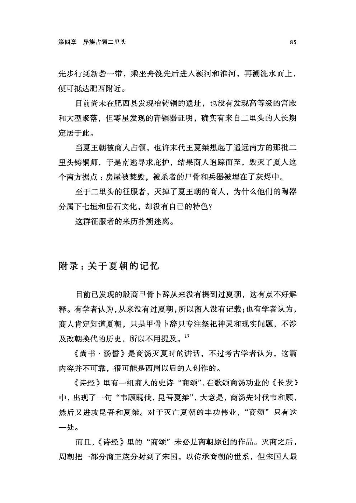
原书阅读器页 100原书物理 PDF 页 098印刷页 86
4但也有学者认为，东下冯是独立于二里头的文化。参见张立东《论辉卫文化》，《考古学集刊》（10），地质出版社，1996年；常怀颖《从新峡遗址再论二里头与东下冯之关系》，《文物季刊》2022年第1期。
5戴向明等：《山西绛县西吴壁遗址2018—2019年发掘简报》，《考古》2020年第7期。
6侯卫东：《论二里头文化四期中原腹地的社会变迁》，《中原文物》2020年第3期。
7一般认为夏商易代发生在公元前1600年前后，碳十四测年的精度很难体现50年范围的差别，所以这个小差别目前只能忽略。
8赵海涛：《二里头遗址二里头文化四期晚段遗存探析》，《南方文物》2016年第4期。
9参见中科院考古所二里头工作队《1984年秋河南偃师二里头遗址发现的几座墓葬》，《考古》1986年第4期。
10中科院考古所：《二里头：1999—2006》第一册，第257页。
11关于2004VH305灰坑，详见中科院考古所《二里头：1999—2006》第一册，第417页。
12新墙编号Q3，详见赵海涛《二里头遗址二里头文化四期晚段遗存探析》。
13程露：《也谈肥西大墩孜出土的青铜壁和铃》，《东方博物》第25辑，浙江大学出版社，2007年。
14秦让平：《安徽肥西三官庙遗址发现二里头时期遗存》，《中国文物报》2019年8月23日；方林：《肥西三官庙遗址出土青铜兵器的年代及相关问题》，《文物鉴定与鉴赏》2020年第10期下。
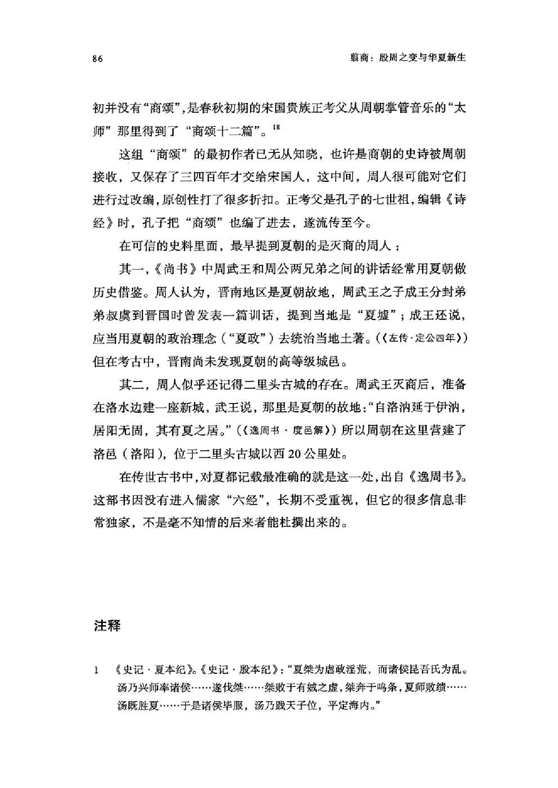
原书阅读器页 101原书物理 PDF 页 099印刷页 87
15这件“半月形铜钺”更像是5000多年前长江下游的多孔石刀，在南京北阴阳营和安徽薛家岗都有发现。
16方林：《肥西三官庙遗址出土青铜兵器的年代及相关问题》。
17戴向明：《夏文化、夏王朝及相关问题》，《江汉考古》2021年第6期；中国先秦史学会等：《夏文化研究论集》，中华书局，1996年。
18《毛诗序》：“有正考甫者，得商颂十二篇于周之大师。”
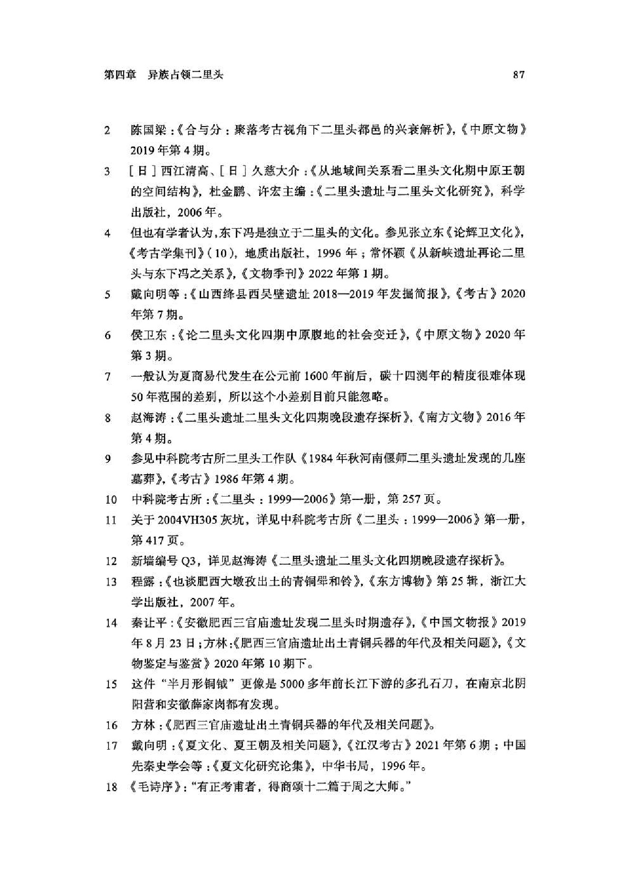
原书阅读器页 102原书物理 PDF 页 100印刷页 88
编辑札记
标记
先在正文中选择文字，再输入拼音；可用“拼音；简注”。